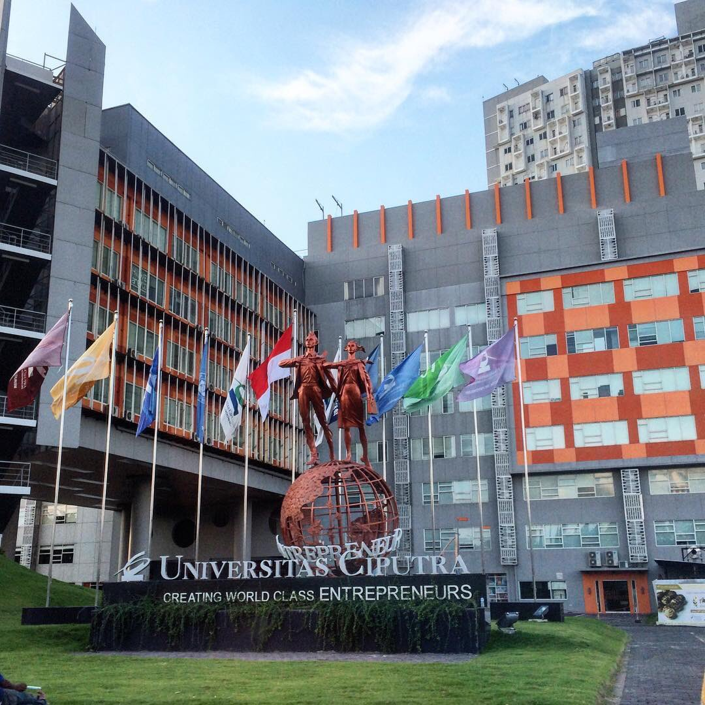

Universitas Ciputra?
Mengapa Universitas Ciputra? Yah ceritanya panjang, intinya adalah saya awalnya merupakan pejuang SBMPTN yang ingin mendaftar kuliah di ITS, karena saya memiliki background pendidikan negeri semua dari SD hingga SMA. Namun sayangnya saya tidak mampu lolos tes untuk kuliah di ITS dengan jurusan yang saya pilih, yaitu Teknik Informatika. Atas pertimbangan lokasi dan fasilitas yang diberikan, saya bersama keluarga sepakat untuk mendaftar kuliah di Universitas Ciputra dan saya sendiri memilih jurusan Informatics (IMT).
